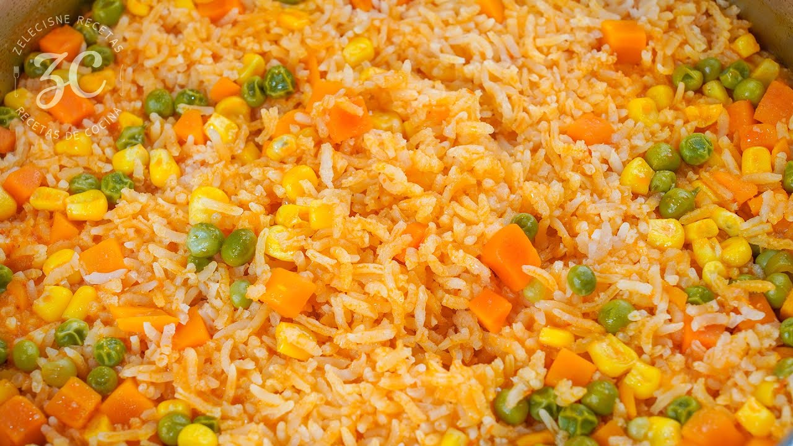

Mexican Rice

Description
Rice was introduced to Mexico by the Spanish and was incorporated and adapted to the Mexican culture.
Mexican rice is versatile as it can be served as a starter dish or a side-dish and can accompany a variety of dishes.
Ingredients
- 2 cups of white rice
- 3 tomatoes
- 2 carrots
- 1 cup of corn
- 1 cup of peas
- 1 clove of garlic
- 1/4 an onion (white, red or yellow)
- 1 tablespoon of salt
- 3 tablespoons of olive oil
Steps
- Boil the tomatoes and union in water until both are soft
- In the meantime, cut the carrots into small pieces
- Remove the boiled tomatoes and onion and add two cups of the boiled broth into the blender
- Add the tablespoon of salt into the blender and blend together for one minute
- Wash the white rice throurougly in water
- Preheat the frying pan and pour the three tablespoons of olive oil
- Pour the two cups of white rice into the pan and fry for about three to five minutes until the rice turn golden brown
- Continually move the rice otherwise it may stick together
- Once the rice is golden brown, pour the sauce from the blender into the rice and stir to season the rice until most of the liquid has evaporated (this process can take about 15 minutes)
- Add two cups of water and add the cup of peas, corn and carrots into the mix
- Cover the pan and let it cook for about ten minutes
- Taste the mix for salt and add more if needed
- Once the water evaporates from the bottom of the pan, your rice is ready, enjoy!